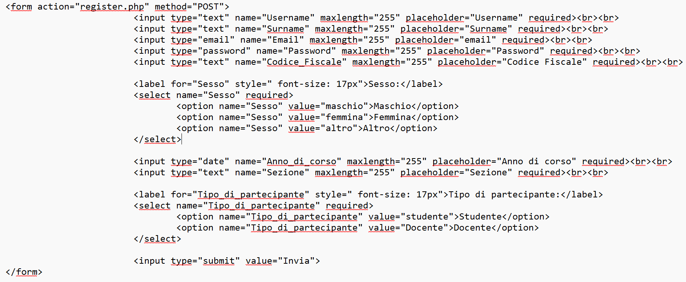

Progettare una pagina web che abbia una immagine della struttura del form ed con la seguente pagina php. Inserire un form anagrafico contente i seguenti campi:
I campi sono:
Username
Surname
Email
Password
Codice fiscale
Sesso
Anno di corso
Sezione
Tipo di partecipante
CODICE HTML:

Parto da una pagina statica.
Lo step iniziale e' il disegno della pagina, creo una cartella all'interno: C:/xampp/htdocs/esercizio, in cui ci metto il lavoro.
Nella cartella del progetto inserisco una pagina html e una pagina php.
Nell'html abbiamo quindi un form e all'interno della sua sintassi c'e':
una action="file.php" => Specifica la pagina PHP a cui inviare i dati;
e il method="POST" => Indica che i dati verranno inviati con il metodo POST (piu' sicuro rispetto al GET per l'invio di dati sensibili)..
Per ogni campo abbiamo un input e ho utilizzato un 'placeholder="" ' in cui specifica un breve suggerimento che descrive il valore previsto di un campo input.
Ogni campo contiene il name="": che rappresenta il nome della variabile con cui verra' richiamato il valore nella pagina PHP. Il nome della variabile e' la parte piu' importante di un campo.
Ogni campo ha un type="" appropriato (es. text, email, password, number, ecc.), in base alle necessita' dell'esercizio.